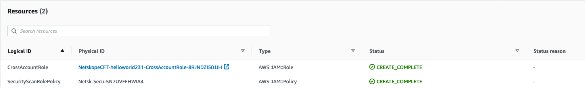

Setting Up AWS Instances using Old UI
In release 74, Netskope revised the AWS account setup process that allows you to configure multiple AWS accounts with Netskope’s Public Cloud Security features. For information about the new set up process, see Setting Up Multiple AWS Accounts using the New UI.
If you are using the old UI, then follow the instructions in the following sections to configure your AWS accounts for Security Assessment, DLP, and Threat Protection.
You can migrate existing instances of AWS accounts configured in your Netskope tenant to the new set up. For instructions to migrate to the new set up, see Migrate existing AWS accounts to the new set up.
Configure AWS for Continuous Security Assessment
Tip
If you have already set up an instance for CloudTrail and want to scan an S3 bucket or Security Assessment, simply attach the permissions required for CloudTrail or Security Assessment to the existing role, and then enable the CloudTrail or Security Assessment check-boxes in the Netskope UI.
Note
Netskope normalizes the term "Account" to help with cross CSP summaries. Netskope normalized “Account” field maps to AWS Account.
To configure AWS for continuous security assessment:
Log in to the Netskope tenant UI:
https://<tenant hostname>.goskope.comand navigate to Settings > API-enabled Protection > Cloud Infrastructure.Select the AWS icon, and then click SETUP.
The New Setup window opens.
Under AWS Role, note the Netskope Account ID and Netskope External ID. You need to enter these into the AWS console in steps 8-9.
Log in to AWS console.
Navigate to Services > Security, Identity & Compliance and click IAM.
In the left navigation bar, click Roles and then Create role.
In the Select type of trusted entity page, select Another AWS account.
Enter the account ID you noted from the Netskope UI in step 3.
Select the Require external ID checkbox and enter the external ID you noted from the Netskope UI in step 3.
Note
Leave the Require MFA checkbox unchecked.
Click Next: Permissions.
In the Attach permissions policies page, add the SecurityAudit policy and click Next: Tags.
In the Add tags (optional) page, do not add any IAM tags and click Next: Review.
In the Review page, enter a role name and then click Create role.
After creating a role, you need to attach a policy to it. In the Roles page, click on the role you just created.
On the Permissions tab, click + Add inline policy. In the Create Policy page, enter the following details:
From the Service drop-down list, select DynamoDB.
From the Actions drop-down list, select ListTagsOfResource.
In the Resources field, select All resources.
Click Add additional permissions.
From the Services drop-down list, select SES.
From the Actions drop-down list, select ListIdentityPolicies.
Click Add additional permissions.
From the Service drop-down list, select Lambda.
From the Actions drop-down list, select all actions starting with Get (8 actions) and List (7 actions) strings.
In the Resources field, select All resources.
Click Add additional permissions.
From the Service drop-down list, select S3.
From the Actions drop-down list, select GetBucketLocation, GetObject, GetObjectAcl, ListAllMyBuckets, and ListBucket.
In the Resources field, select All resources.
From the Service drop-down list, select SQS.
From the Actions drop-down list, select ListDeadLetterSourceQueues, ListQueues, GetQueueAttributes, and GetQueueUrl.
In the Resources field, select All resources.
The inline policy definition should look like this in JSON format. You can click the JSON tab to view the policy script.
{ "Version": "2012-10-17", "Statement": [ { "Sid": "VisualEditor0", "Effect": "Allow", "Action": [ "lambda:ListVersionsByFunction", "lambda:GetLayerVersion", "dynamodb:ListTagsOfResource", "s3:ListBucket", "lambda:GetAccountSettings", "lambda:GetFunctionConfiguration", "lambda:GetLayerVersionPolicy", "s3:GetObjectAcl", "lambda:ListLayerVersions", "lambda:ListLayers", "lambda:GetAlias", "sqs:ListQueues", "sqs:GetQueueUrl", "lambda:ListFunctions", "lambda:GetEventSourceMapping", "lambda:GetFunction", "lambda:ListAliases", "sqs:GetQueueAttributes", "s3:GetBucketAcl", "ses:ListIdentityPolicies", "s3:GetObject", "sqs:ListDeadLetterSourceQueues", "s3:ListAllMyBuckets", "lambda:ListEventSourceMappings", "s3:GetBucketLocation", "lambda:GetPolicy" ], "Resource": "*" } ] }Click Review policy.
Enter the name of the policy and click Create Policy.
In the Summary page, copy the Role ARN value. You need to enter this in the Netskope UI when you create your AWS instance.
Create an AWS Instance in API-enabled Protection
To create an AWS instance in API-enabled Protection:
Log in to the Netskope tenant UI.
Navigate to Settings > API-enabled Protection > Cloud Infrastructure > AWS > SETUP.
The New Setup window opens. Enter the following parameters:
AWS Account Name: Enter a unique name of the AWS account.
Admin email: Enter the email address to receive email notification when a policy is triggered.
Note
You can set a notification on the Policies > API-enabled Protection > NEW POLICY wizard page.
Connection Type:
Note
Few of the instance type options may be disabled. Contact your Netskope sales representative for additional information.
Security Assessment: Select this option to assess your AWS resources. Also, you have the option to run the policy at intervals (30 minutes, 60 minutes, 2 hours, 6 hours, and 24 hours).
Note
Netskope recommends setting the interval to 60 minutes or more.
Role: Enter the AWS resource name of IAM role you copied in step 19.
Note
CloudTrail name and region are not required for Security Assessment.
Click Save, then click Grant Access for the AWS instance you just created.
Refresh your browser, and you should see a green check icon next to the instance name. Navigate to the Policies > Security Assessment page to create a security assessment policy, profile, and rule. Once you create a policy, Netskope accesses and analyzes the posture of the AWS resources and alerts the administrator for risk and possible remediation. You can view the AWS security assessment dashboard by navigating to the Cloud Infrastructure page.
Setting up Multiple AWS Instances
You can setup multiple AWS instances to perform Continuous Security Assessments (CSA) on an AWS account using the Netskope platform. The process requires the following two steps.
The customer AWS account needs to be configured to provide Netskope with the appropriate permissions to scan the resources in the account.
An API-enabled Protection Cloud Infrastructure account (instance) needs to be set up in the Netskope UI.
More details about this setup procedure and the required permissions are available .
This CLI-based script allows you to set up multiple AWS instances for CSA without having to perform the above two steps individually (in the Netskope UI) for each AWS account.
Note
With this script, Netskope currently supports the creation of instances configured for CSA only.
The input to this script is provided via a JSON configuration file that contains the list of AWS accounts to be configured for CSA and the configuration details of those AWS accounts/API-enabled Protection instances. This script reads the configuration file created by the customer and performs the two setup steps:
Configures the AWS accounts listed the configuration file to provide permission for Netskope to scan the resources in those accounts. This configuration is done by generating and executing an AWS Cloud Formation Template (CFT) to create the appropriate resources and policies.
Sets up the corresponding API-enabled Protection accounts (instances) in the Netskope UI.
Terminology
Sub-account(s): The set of accounts in the customer's AWS environment that need to be configured for CSA.
Master account: The primary or central account (could be the master account of the customer’s AWS organization) used to configure all the sub-accounts. Using a master account is optional, but if used, the master account needs to have appropriate privileges to perform the necessary actions on the sub-accounts.
Prerequisites
Netskope tenant host name and API token. Refer to the Netskope REST API documentation located .
Permissions for the script to create resources/policies in the sub-accounts. An AWS sub-account can be configured for CSA in a couple of ways:
Using a role that belongs to the sub-account and can be assumed from the master account. In this case, the role details (ARN and External ID) and the master account credentials (access key and secret key) must be populated in the “assume_role” section in the JSON Configuration File Template. The role must be configured with an external ID (even though both master and sub-account belong to the same customer/organization) and is recommended to have "AdministratorAccess" policy attached.
Note
The AdministratorAccess permission is granted only to the master account within the customer’s organization, not to Netskope. If a role with lower privileges is preferred, refer to Lower Privilege for Sub-Account Role that Trusts Master Account.
Using the access token for a user that exists in the sub-account itself. In this case, the access key ID and secret access key of that user must be populated in the “token” section in the JSON Configuration File Template. The user must have "AdministratorAccess" policy permission. For lower privileges, refer to the Lower Privilege for Sub-Account Role that Trusts Master Account.
JSON Configuration File Template
The name of the configuration file can be anything as long as it matches the name specified in the script arguments. For each AWS account to be set up, create one entry in the “instances” JSON array.
{
"instances":
[
{
"config":
{
"instance_name":"...",
"securityscan_interval":60,
"email_id":"...",
"use_for":
[
"securityscan"
]
},
"credentials":
{
"assumeRole":{
"role_arn":"...",
"external_id":"...",
"access_key_id":"...",
"secret_access_key":"..."
},
"token":
{
"access_key_id":"...",
"secret_access_key":"..."
}
}
]
}
instance_name: [REQUIRED] Name of Instance. Instance name should only have alphanumeric characters without any special characters or spaces. It is recommended to have the instance_name be the same as the AWS account name.
securityscan_interval: [REQUIRED] Selected interval to run Security Scan in minutes. Allowed values are 30, 60, 120, 360, 1440.
email_id: [REQUIRED] Email of the User. It is recommended that this email is the owner of the Account, but you can use a single email for all the sub-accounts.
use_for: [REQUIRED] Netskope feature to be used. For CSA scans only use “securityscan”.
credentials:
assumeRole: [OPTIONAL] Details of role with required privileges to run CFT template.
role_arn: [REQUIRED] ARN of the role in the sub-account that has a trust relationship with the master account. The role should be set up with an external ID and permission should have "AdministratorAccess" policy.
external_id: [REQUIRED] External ID provided in the IAM role above.
access_key_id: [REQUIRED] The access key ID of the user in the master account which has STS policy with read/write permissions for all resources.
secret_access_key: [REQUIRED] Secret access key of the user in the master account
token: [OPTIONAL] Credentials of an AWS user with required privileges to run CFT template.
access_key_id: [REQUIRED] IAM access key ID for the account to be added to Netskope IaaS
secret_access_key: [REQUIRED] IAM secret access key for the account to be added to Netskope IaaS
Note
Either assumeRole or token is mandatory.
Configuration File Example
The example file below configures <sub-account 1> using roles and <sub-account 2> using user access tokens.
{
"instances":
[
{
"config":
{
"instance_name":"<sub-account 1 name>",
"securityscan_interval":60,
"email_id":"<account1_admin@company.com>",
"use_for":
[
"securityscan"
]
},
"credentials":
{
"assumeRole":
{
"role_arn":"arn:aws:iam::<id>:role/master-admin-role",
"external_id":"<external id string>",
"access_key_id":"<access key id of master account>",
"secret_access_key":"<secret access key of master account>"
}
}
},
{
"config":
{
"instance_name":"<AWS sub-account 2>",
"securityscan_interval":60,
"email_id":"<account2_admin@company.com>",
"use_for":
[
"securityscan"
]
},
"credentials":
{
"token":
{
"access_key_id":"<access key id of sub-account 2>",
"secret_access_key":"<secret access key of sub-account 2>"
}
}
}
]
}
Steps to Run the Script
Install the following:
Python2.7 -
sudo apt install python2.7Pip -
sudo apt install python-pipVirtual Environment -
pip install virtualenv
Download nsiaastools-0.0.2.tar.gz package from the Netskope Support Portal.
Move the package to any desired location where it can be installed.
mv nsiaastools-<version>.tar.gz <package installation path>Change directory to location where nsiaastools package is located.
cd <package installation path>Create a virtual environment to install the package in.
sudo virtualenv <virtual environment name>Activate the newly created virtual environment.
sudo virtualenv <virtual environment name>Install nsiaastools package inside the virtual environment.
pip install nsiaastools-<version>.tar.gzRun the script to create new API-enabled Protection AWS instances in the Netskope UI.
aws_instance_setup.py [-h] -i CONF_FILE -c TOKEN -t TENANT-i, --instances
JSON Configuration File Template for Netskope instances to be created
-c, --token
Netskope API Token
-t, --tenant
Netskope tenant hostname
CloudFormation Template Output After the Execution of the Script
|  |
Sample AWS Account Configuration
Role ARN for assumeRole.role_arn
 |
Troubleshooting
Error Message | Reason | Remediation |
|---|---|---|
Maximum <number> of combined <list> instances has reached. Cannot create more instances. | Instance creation limit reached. | Maximum instances created hence stop creating any new instances. |
Invalid REST API Token. Please contact administrator. | Invalid Netskope token supplied. | Check the Netskope token applied. |
Appendix
Lower Privilege for Sub-Account Role that Trusts Master Account
If you do not intend to configure the sub-account role that trusts the master account with AdministratorAccess policy, the role can be configured with a policy equivalent to the following:
{
"Version": "2012-10-17",
"Statement":
[
{
"Action":
[
“s3:*",
"cloudtrail:*",
"sns:*",
"iam:*",
"cloudformation:*"
],
"Resource": "*",
"Effect": "Allow"
}
]
}Configure AWS CloudTrail for Audit Reports
Adding the Netskope app to your AWS account has these requirements:
Create or have access to an existing S3 bucket, SNS topic, and CouldTrail service.
Create a role for Netskope to grant permissions.
To configure AWS CloudTrail for Netskope:
Log in to the Netskope tenant UI:
https://<tenant hostname>.goskope.comand navigate to Settings > API-enabled Protection > Cloud Infrastructure.Select the AWS icon, and then click Setup.
The New Setup window opens.
Under Follow these instructions before proceeding:, note the Netskope Account ID and Netskope External ID. You need to enter these into the AWS console in steps 11-12.
Log in to the AWS console.
In the AWS Management Console, navigate to Services > Management & Governance and click CloudTrail.
In the left navigation bar, click Trails, and then click Create trail (or select an existing trail).
For a new trail, enter these parameters:
Trail name: Enter a unique name.
Apply trail to all regions: Yes
Management events > Read/Write events: All
Data events: Keep the setting unchanged.
Create a new S3 bucket: Yes
Note
You can use an existing S3 bucket as an option.
S3 bucket: New S3 bucket where you would like your logs delivered. CloudTrail creates the bucket and applies the appropriate policy.
Click Advanced
(Optional) Encrypt log files with SSE-KMS: Yes
This step is optional. You can keep the default setting to No. However, it is recommended you encrypt your CloudTrail log files to avoid CSA benchmark noncompliance.
(Optional) Create a new KMS key: You can either create a new KMS key or use an existing one.
(Optional) KMS key: Based on the selection from the earlier step, you can either enter a new KMS key or select an existing key from the drop-down list.
Note
If you use an existing KMS key, you should edit the policy of the customer managed key (CMK) to decrypt a CloudTrail log file. For more information, see Permissions Required to Decrypt a CloudTrail Log File.
Enable log file validation: Yes
Send SNS notification for every log file delivery: Yes
Create a new SNS topic: If you select Yes, enter the new SNS topic name in the SNS topic field in the next step. If you select No, select an existing topic from the SNS topic drop-down list in the next step.
SNS topic: Based on the selection from the earlier step, you can either enter a new SNS topic name or select an existing topic from the drop-down list.
When finished, click Create.
Note
Note the CloudTrail name and region you just created. You need to enter these in the Netskope UI when you create your AWS instance.
Navigate to Services > Security, Identity & Compliance and click IAM.
In the left navigation bar, click Roles and then Create role.
In the Select type of trusted entity page, select Another AWS account.
Enter the account ID you noted from the Netskope UI in step 3.
Select the Require external ID checkbox and enter the external ID you noted from the Netskope UI in step 3.
Note
Leave the Require MFA checkbox unchecked.
Click Next: Permissions.
In the Attach permissions policies page, add the SecurityAudit policy and click Next: Tags.
In the Add tags (optional) page, do not add any IAM tags and click Next: Review.
In the Review page, enter a role name and then click Create role.
After creating a role, you need to attach a policy to it. In the Roles page, click on the role you just created.
On the Permissions tab, click + Add inline policy. In the Create Policy page, enter the following details:
From the Service drop-down list, select SNS.
From the Actions drop-down list, select ComfirmSubscription, Subscribe, and Unsubscribe.
In the Resources field, select All resources.
Click Add additional permissions.
From the Service drop-down list, select S3.
From the Actions drop-down list, select GetObject.
In the Resources field, select All resources.
Click Add additional permissions.
From the Service drop-down list, select CloudTrail.
From the Actions drop-down list, select DescribeTrails and LookupEvents.
The inline policy definition should look like this in JSON format. You can click the JSON tab to view the policy script.
{ "Version": "2012-10-17", "Statement": [ { "Sid": "VisualEditor0", "Effect": "Allow", "Action": [ "s3:GetObject", "cloudtrail:LookupEvents", "sns:Unsubscribe", "sns:Subscribe", "sns:ConfirmSubscription", "cloudtrail:DescribeTrails" ], "Resource": "*" } ] }Click Review Policy.
Enter the name of the policy and click Create Policy.
In the Summary page, note the Role ARN value. You need to enter this in the Netskope UI when you create your AWS instance.
Permissions Required to Decrypt a CloudTrail Log File
You should edit the policy of the customer managed key (CMK) to ensure Netskope can decrypt the CloudTrail log files. Follow the instructions below.
Sign in to the AWS Management Console and open the AWS Key Management Service (AWS KMS) console at https://console.aws.amazon.com/kms.
To change the AWS Region, use the Region selector in the upper-right corner of the page.
In the navigation pane, choose Customer managed keys.
Click the key that you used while creating a CloudTrail.
Under the Key policy tab, click Edit.
Enter the following piece of code to decrypt a CloudTrail log:
{ "Sid": "Enable cross account log decryption", "Effect": "Allow", "Principal": { "AWS": "*" }, "Action": [ "kms:Decrypt", "kms:ReEncryptFrom" ], "Resource": "*", "Condition": { "StringEquals": { "kms:CallerAccount": "[account-id]" }, "StringLike": { "kms:EncryptionContext:aws:cloudtrail:arn": "arn:aws:cloudtrail:*:[account-id]:trail/*" } } }Note
Replace the [account-id] parameter with the AWS account ID number. To find your AWS account ID number on the AWS Management Console, choose Support on the navigation bar on the upper-right, and then choose Support Center. Your currently signed-in account number (ID) appears in the Support Center title bar.
Click Save changes.
Create an AWS Instance in API-enabled Protection
To create an AWS instance in API-enabled Protection:
Log in to the Netskope tenant UI.
Navigate to Settings > API-enabled Protection > Cloud Infrastructure > AWS > Setup.
The New Setup window opens. Enter the following parameters:
AWS Account Name: Enter a unique name of the AWS account.
Admin email: Enter the email address to receive email notification when a policy is triggered.
Note
You can set a notification on the Policies > API-enabled Protection > NEW POLICY wizard page.
Connection Type:
Note
Few of the instance type options may be disabled. Contact your Netskope sales representative for additional information.
Audit Log Collection: Select this option to use your AWS CloudTrail to scan audit logs.
Role: Enter the AWS resource name of IAM role you noted in step 21.
CloudTrail Name: To scan audit reports, enter the name of the CloudTrail created in step 7.
CloudTrail Region: To scan audit reports, enter the region code for the CloudTrail. To identify the region in the AWS console:
Log in to the AWS console.
In the AWS services page, go to All Services > Management Tools and click CloudTrail.
In the left navigation bar, click Trails.
Hover the mouse over All and note the region name.

Use this URL to determine the code associated with the region name:
Click Save, then click Grant Access for the AWS instance you just created.
Refresh your browser, and you should see a green check icon next to the instance name. Netskope creates a subscription to the topic you created, and start receiving logs.
Configure AWS S3 for DLP Scanning and Threat Protection
Adding the Netskope app to your AWS account has these requirements:
Create or have access to an existing S3 bucket, SNS topic, and CloudTrail service.
Create a role for Netskope to grant permissions.
Important
Till release 49, an S3 bucket would use the SNS topic to send S3 bucket-related notifications to Netskope. Starting from release 50, CloudTrail subscription uses the SNS topic to send S3 bucket-related notifications to Netskope. Due to this change, it is necessary to create or use an existing CloudTrail subscription. For more information, read the KB article located here.
IaaS Storage Scan (DLP and Threat Protection) feature does not support quarantine and legal hold functionalities. If you have configured a DLP or Malware quarantine profile with an external storage provider such as OneDrive, the file would be copied to that location. However, the file would not be removed from its original location in the public cloud storage, AWS S3.
Configure an S3 Bucket, SNS Topic, and CloudTrail Service
To configure AWS S3/CloudTrail for DLP scanning:
Log in to the Netskope tenant UI:
https://<tenant hostname>.goskope.comand navigate to Settings > API-enabled Protection > Cloud Infrastructure.Select the AWS icon, and then click SETUP.
The New Setup window opens.
Under AWS Role, note the Netskope Account ID and Netskope External ID. You need to enter these into the AWS console in steps 11-12.
Log in to the AWS console.
In the AWS services page, navigate to All Services > Management Tools and click CloudTrail.
In the left navigation bar, click Trails, and then click Create trail (or select an existing trail).
For a new trail, enter these parameters:
Trail name: Enter a unique name.
Apply trail to all regions: Yes
Management events > Read/Write events: All
Enable data events for S3 bucket(s). To do so:
Navigate to the Data events section and select the S3 tab.
Either select all S3 buckets in your account or add a specific S3 bucket.
Enable the Read and Write checkbox.
Note
Additional charges may apply once you enable data events for S3 buckets. Learn more.
Create a new S3 bucket: Yes
Note
You can use an existing S3 bucket as an option.
S3 bucket: New S3 bucket where you would like your logs delivered. CloudTrail creates the bucket and applies the appropriate policy.
Click Advanced
(Optional) Encrypt log files with SSE-KMS: Yes
This step is optional. You can keep the default setting to No. However, it is recommended you encrypt your CloudTrail log files to be CIS compliant.
(Optional) Create a new KMS key: You can either create a new KMS key or use an existing one.
Note
If you use an existing KMS key, you should edit the policy of the customer managed key (CMK) to decrypt a CloudTrail log file. For more information, see Permissions Required to Decrypt a CloudTrail Log File.
(Optional) KMS key: Based on the selection from the earlier step, you can either enter a new KMS key or select an existing key from the drop-down list.
Enable log file validation: Yes
Send SNS notification for every log file delivery: Yes
Create a new SNS topic: If you select Yes, enter the new SNS topic name in the SNS topic field in the next step. If you select No, select an existing topic from the SNS topic drop-down list in the next step.
SNS topic: Based on the selection from the earlier step, either enter a new SNS topic name or select an existing topic from the drop-down list.
When finished, click Create.
Note
Note the CloudTrail name and region you just created. You need to enter these in the Netskope UI when you create your AWS instance.
Next, create a role for Netskope to grant permissions.
Navigate to Services > Security, Identity & Compliance and click IAM.
In the left navigation bar, click Roles and then Create role.
In the Select type of trusted entity page, select Another AWS account.
Enter the account ID you noted from the Netskope UI in step 3.
Select the Require external ID checkbox and enter the external ID you noted from the Netskope UI in step 3.
Note
Leave the Require MFA checkbox unchecked.
Click Next: Permissions.
In the Attach permissions policies page, add the SecurityAudit policy and click Next: Tags.
In the Add tags (optional) page, do not add any IAM tags and click Next: Review.
In the Review page, enter a role name and then click Create role.
After creating a role, you need to attach a policy to it. In the Roles page, click on the role you just created.
On the Permissions tab, click + Add inline policy. In the Create Policy page, enter the following details:
From the Service drop-down list, select SNS.
From the Actions drop-down list, select ConfirmSubscription, Subscribe, and Unsubscribe.
In the Resources field, select All resources.
Click Add additional permissions.
From the Service drop-down list, select S3.
From the Actions drop-down list, select GetBucketLocation, GetObject, GetObjectAcl, ListAllMyBuckets, ListBucket.
In the Resources field, select All resources.
Click Add additional permissions.
From the Service drop-down list, select CloudTrail.
From the Actions drop-down list, select DescribeTrails and LookupEvents.
The inline policy definition should look like this in JSON format. You can click the JSON tab to view the policy script.
{ "Version": "2012-10-17", "Statement": [ { "Sid": "VisualEditor0", "Effect": "Allow", "Action": [ "s3:GetObjectAcl", "s3:GetObject", "cloudtrail:LookupEvents", "s3:ListAllMyBuckets", "sns:Unsubscribe", "s3:ListBucket", "sns:Subscribe", "sns:ConfirmSubscription", "s3:GetBucketLocation", "cloudtrail:DescribeTrails" ], "Resource": "*" } ] }Click Review policy.
Enter the name of the policy and click Create Policy.
In the Summary page, copy the Role ARN value. You need to enter this in the Netskope UI when you create your AWS instance.
Permissions Required to Decrypt a CloudTrail Log File
You should edit the policy of the customer managed key (CMK) to ensure Netskope can decrypt the CloudTrail log files. Follow the instructions below.
Sign in to the AWS Management Console and open the AWS Key Management Service (AWS KMS) console at https://console.aws.amazon.com/kms.
To change the AWS Region, use the Region selector in the upper-right corner of the page.
In the navigation pane, choose Customer managed keys.
Click the key that you used while creating a CloudTrail.
Under the Key policy tab, click Edit.
Enter the following piece of code to decrypt a CloudTrail log:
{ "Sid": "Enable cross account log decryption", "Effect": "Allow", "Principal": { "AWS": "*" }, "Action": [ "kms:Decrypt", "kms:ReEncryptFrom" ], "Resource": "*", "Condition": { "StringEquals": { "kms:CallerAccount": "[account-id]" }, "StringLike": { "kms:EncryptionContext:aws:cloudtrail:arn": "arn:aws:cloudtrail:*:[account-id]:trail/*" } } }Note
Replace the [account-id] parameter with the AWS account ID number. To find your AWS account ID number on the AWS Management Console, choose Support on the navigation bar on the upper-right, and then choose Support Center. Your currently signed-in account number (ID) appears in the Support Center title bar.
Click Save changes.
Handle Encrypted S3 Bucket
Note
Netskope only supports SSE-S3 and SSE-KMS encryption modes for S3 buckets. This procedure should be followed only if your S3 buckets are encrypted with customer managed Key Management Service (KMS).
If your S3 buckets are encrypted with customer managed KMS, you should add the Netskope role (that you created in steps 8-18 above) to the key users. To do so, follow the steps below:
Log in to the AWS console.
In the AWS services page, navigate to Services > Security, Identity & Compliance and click IAM.
In the left navigation bar, click Encryption Keys.
On the left navigation bar, click Customer managed keys.
Locate the KMS key used to encrypt the S3 bucket.
Add the Netskope role (that you created in step 16 above) to the key users.
Create an AWS Instance in API-enabled Protection
To create an AWS instance in API-enabled Protection:
Log in to the Netskope tenant UI.
Navigate to Settings > API-enabled Protection > Cloud Infrastructure > AWS > SETUP.
The New Setup window opens. Enter the following parameters:
AWS Account Name: Enter a unique name of the AWS account.
Admin email: Enter the email address to receive email notification when a policy is triggered.
Note
You can set a notification on the Policies > API-enabled Protection > NEW POLICY wizard page.
Connection Type:
Note
Few of the instance type options may be disabled. Contact your Netskope sales representative for additional information.
DLP for S3: Select this option to scan files in your S3 buckets.
Threat Protection: Select this option to scan S3 buckets for malware. You can select this option only if you have selected DLP for S3.
Note
The Threat Protection feature is optional. Select this option if you intend to scan S3 buckets for malware. You can view the malware alerts in SkopeIT > Alerts and Incidents > Malware pages.
Role: Enter the AWS resource name of IAM role you copied in step 21.
CloudTrail Name: To scan audit reports, enter the name of the CloudTrail created in step 7.
CloudTrail Region: To scan audit reports, enter the region code for the CloudTrail. To identify the region in the AWS console:
Log in to the AWS console.
In the AWS services page, navigate to All Services > Management Tools and clickCloudTrail.
In the left navigation bar, click Trails.
Hover the mouse over All and note the region name.
Use this URL to determine the code associated with the region name:
Click Save, then click Grant Access for the AWS instance you just created.
Refresh your browser, and you should see a green check icon next to the instance name. API-enabled Protection DLP scans can be performed in AWS S3 buckets. Navigate to the Policies > API-enabled Protection page, and from here you can select the AWS instance created and perform DLP for all regions, specific regions, or targeted to specific buckets in a region.
Note
AWS S3 DLP violations do not have a dedicated API-enabled Protection dashboard; administrators and select users receive email alerts specified in the policy, as well as SkopeIT alerts and through Incident Management.
What Triggers a Scan and Billing of AWS S3 Bucket?
Storage scan is billed against number of bytes scanned by DLP and/or malware services. In case of AWS S3 bucket, scanning of an object is triggered in the following scenarios:
Uploading and/or reuploading a file to an S3 bucket which has policies configured for DLP and/or malware scans, using AWS CLI, AWS console, or API call
({{'PostObject', 'RestoreObject', 'PutObject', 'PutObjectAcl', 'CopyObject', 'CreateMultipartUpload', 'UploadPart', 'UploadPartCopy', 'CompleteMultipartUpload' }})programmatically.Renaming a file in an S3 bucket which has policies configured for DLP and/or malware scans, using AWS CLI, or AWS console.
In the above cases, scan occurs irrespective of whether the file/object has changed or not.
For an S3 bucket, there is no other case when a scan is performed. Cases where scan is not performed include:
Changing object metadata like tags or access control policies.
Deleting an object from an S3 bucket.
Reading object using AWS CLI, console or API call (like
GetObject API) programmatically.Uploading and/or reuploading a file to an S3 bucket which has no policies configured for DLP and/or malware scans.
Create an API-enabled Protection Policy
To discover existing data residing within your sanctioned cloud services, create an API-enabled Protection policy with the desired options and actions. The Netskope UI guides you through the process of configuring policies for each of your cloud apps on a single web page.
Cloud apps have unique features, so the policy options vary depending on the app you select on the top of the page. Choose the topic below for the app API connector you have configured.
Application
To configure an API-enabled Protection policy:
In the Netskope UI, go to Policies > API-enabled Protection and click New Policy.
In the Application section, select the app.
Note
If you select Google Drive as the application type, the administrator has an option to scan Content or Connected Apps/Plugins.
In the Instance section, select the app instance for the policy.
Click Next, and then go to the topic in this guide that matches the section you're configuring on the New API-enabled Protection Policy page.
Office 365 SharePoint Limitation
For Office 365 SharePoint application, when a policy is created on a parent site, it is not applied on the content in a sub-site under the parent site. If a policy has to be applied on sub-sites, you have to explicitly select in the policy.
Resource
This section of the API-enabled Protection Policy page specifies the AWS and Microsoft Azure resources that will be scanned for a policy violation. The section is only for the AWS and Azure apps.
Select All S3 Buckets or Subset of S3 Buckets from the Resources section.
Select All Storage Accounts or Subset of Storage Accounts from the Resources section.
Note
Netskope supports General-purpose v2 (GPv2) and Blob storage accounts for Azure. If you select the Subset of Storage Accounts option, only the GPv2 and Blob storage accounts are listed. General-purpose v1 (GPv1) accounts are not listed.
For a subset of S3 buckets, first select the region from the drop-down list, and then select the bucket(s). When finished, click Next.
For a subset of storage accounts, first select the storage account from the drop-down list, and then select the resource(s). When finished, click Next.
Content
This section of the API-enabled Protection Policy page specifies files, objects, and messages that trigger a policy violation.
For AWS, select All File Types or Specific File Types to scan.
For Azure, select All File Types or Specific File Types to scan.
For Box, you can select one of the following options:
All Sharing Options: Scans all sharing options like private, public, shared internally, and shared externally.
Specific Sharing Options: With specific sharing options, you can choose all or specific sharing types, like Private, Public, Shared Internally, or Shared Externally.
For Shared Externally, you can select all or specific external domains if they have been configured for the app chosen on the instance page. To set thresholds for when content sharing triggers a policy violation, select Advanced Options and enter the number of internal or external collaborators that need to be detected for a policy violation to occur.
All File Types or Specific File Types to scan.
For Cisco Webex Teams, you can select one of the following options:
All Sharing Options: Scans all sharing options like private, shared internally, and shared externally.
Specific Sharing Options: With specific sharing options, you can choose all or specific sharing types, like Private, Shared Internally, or Shared Externally.
For Shared Externally, you can select all or specific organizations if they have been configured for the app chosen on the instance page.
For Dropbox, you can select one of the following options:
All Sharing Options: Scans all sharing options like private, public, shared internally, and shared externally.
Specific Sharing Options: With specific sharing options, you can choose all or specific sharing types, like Private, Public, Shared Internally, or Shared Externally.
For Shared Externally, you can select all or specific external domains if they have been configured for the app chosen on the instance page. To set thresholds for when content sharing triggers a policy violation, select Advanced Options and enter the number of internal or external collaborators that need to be detected for a policy violation to occur.
All File Types or Specific File Types to scan.
For Workplace by Facebook, you can select one of the following options:
All Sharing Options: Scans internally and externally shared posts, comments, replies, chat messages, and attachments.
Specific Sharing Options: With specific sharing options, you can choose all or specific sharing types, internal and/or external.
Internal: Scans posts, comments, replies, chat messages, and attachments shared within the workplace organization.
Note
The Internal sharing option is not available for multi-company groups.
External: Scans posts, comments, replies, chat messages, and attachments shared outside the workplace organization like a multi-company group. For external sharing type, you can select all or specific external domains if they have been configured.
All File Types or Specific File Types to scan.
For Google Drive, you can select one of the following options:
FILES SHARING OPTIONS TO SCAN
All Sharing Options: Scans all sharing options like private, public, shared internally, shared externally, and enterprise shared.
Specific Sharing Options: With specific sharing options, you can choose all or specific sharing types, like Private, Public, Shared Internally, Shared Externally, Enterprise Shared, or Anyone at Enterprise wirth the Link.
Note
What is Enterprise Shared? Any file that is shared within the same organization but belongs to different sub-domain(s).
What is Anyone at Enterprise with the Link? Any file that is shared with any user within an organization but belonging to a different sub-domain(s) of an enterprise.
The Private and Shared Internally options are not available for Google Team Drive.
For Public, you can select:
Public - Indexed and Unlisted: Any file that is shared publicly be it indexed or unlisted.
Public - Indexed Only: Any file that is shared publicly and searchable on Google search.
Public - Unlisted Only: Any file that is has a public sharing link but not listed on Google search.
Note
In Google Drive, files that are publicly shared may not be opened if the Google administrator has set the sharing setting to off in the Google admin console. This setting is located under Apps > Google Workspace > Drives and Docs > Sharing Settings > Sharing options > Sharing outside of <organization>. This discrepancy occurs because the Google API tags the file exposure as public, however the file has access restrictions due to the Sharing outside of <organization> setting set to off.
For Shared Externally, you can select all or specific external domains if they have been configured for the app chosen on the instance page.
To set thresholds for when content sharing triggers a policy violation, select Advanced Options and enter the number of internal or external collaborators that need to be detected for a policy violation to occur.
FILE TYPES TO SCAN
All File Types or Specific File Types to scan.
For Microsoft Office 365 OneDrive for BusinessSharePoint Sites, you can select one of the following options:
FILES SHARING OPTIONS TO SCAN
All Sharing Options: Scans all sharing options like private, public, shared internally, shared externally, and cross-geo.
Specific Sharing Options: With specific sharing options, you can choose all or specific sharing types, like:
Private: A file not shared with anyone.
Public: A file that is shared or open to public.
Shared internally: A file shared specifically with users within the same sub-domain of the organization.
Note
If you share a file with an internal user who is in a different geo location, the file will be classified as 'Cross-geo' instead of 'Internal'.
Shared externally: A file shared specifically with users outside the organization. You can select all or specific external domains if they have been configured for the app. You can create a new domain by selecting the Create New option.
Cross-geo: A file shared between geo locations in an Office 365 multi-geo environment.
Note
If you do not see the cross-geo file sharing option, ensure that the multi-geo capability is enabled on your Microsoft Office 365 account.
Shared with Group(s): A file shared directly with a specific named group. A shared group can be a combination of internal and external users. This list is fetched from your Microsoft Office 365 Admin Center's Groups > Active Groups. Only Microsoft 365, mail-enabled security, and security group types are supported.
Note
If you share a file with individual users in the selected group, API-enabled Protection will not count it as a match.
To set thresholds for when content sharing triggers a policy violation, select Advanced Options and enter the number of internal, cross-geo, or external collaborators that need to be detected for a policy violation to occur. If you share a file with a Microsoft 365 group, API-enabled Protection can expand the group, identify the number of users and apply the threshold limit. However, there are a few important points to note:
API-enabled Protection does not support expansion of a distribution group.
API-enabled Protection does not support the expansion of a sub-group. If a Microsoft 365 group contains a sub-group (group within a group), API-enabled Protection does not expand the sub-group. The sub-group is considered as a single internal or external user.
Owner of a group does not get access to the files shared to the group, and hence API-enabled Protection does not count an owner as a member.
If a file is shared with two groups and user 'x' belongs to both the groups, API-enabled Protection counts this user only once.
Cross-geo users in any group will be treated as internal users. If a Microsoft 365 group contains a cross-geo user (user in another satellite location), API-enabled Protection treats such a user as an internal user during group expansion.
FILE TYPES TO SCAN
All File Types or Specific File Types to scan.
Microsoft Office 365 does not trigger events notification for sharing link activities. Netskope retrieves these via polling mechanism after subsequent events. This may cause delays in processing shared links in OneDriveSharePoint.
For Salesforce, you can select one of the following options:
All Sharing Options: Scans all sharing options like private, public, and shared internally.
Specific Sharing Options: With specific sharing options, you can choose all or specific sharing types, like Private, Public, and Shared Internally.
To set thresholds for when content sharing triggers a policy violation, select Advanced Options and enter the number of internal collaborators that need to be detected for a policy violation to occur.
All File Types or Specific File Types to scan.
For ServiceNow, click SELECT OBJECTS to select the object to scan. Then, select the data type; Fields and/or Attachment. You must select select object(s) if you check the Fields checkbox. The following table lists the fields that support and do not support DLP scans:
ServiceNow Table | Supported Fields | Non-Supported Fields* |
|---|---|---|
Incident | Short description | Additional comments |
Problem | Short description | Workaround |
Description | Work notes | |
Close notes | - |
*Due to the ServiceNow API limitations, Netskope cannot perform DLP scans on the non-supported fields.
Note
Netskope can perform DLP scan on files attached to the ServiceNow Incident and Problem tables.
For Slack, you can select one of the following options:
All Sharing Options: Scans all sharing options like private, public (files only), shared internally, and shared externally.
Specific Sharing Options: With specific sharing options, you can choose all or specific sharing types, like Private, Public (files only), Shared Internally, or Shared Externally (All External Domains).
Under Content Type, select Messages and/or Files. If you select the Files option, you can select All File Types or Specific File Types to scan.
For Slack for Enterprise, you can select one of the following options:
All Sharing Options: Scans all sharing options like private, public (files only), shared internally, and shared externally.
Specific Sharing Options: With specific sharing options, you can choose all or specific sharing types, like Private, Public (files only), Shared Internally, or Shared Externally (All External Domains).
Under Content Type, select Messages and/or Files. If you select the Files option, you can select All File Types or Specific File Types to scan.
Support Folder-based Policies for Egnyte
In Egnyte, shared/team folders can be created by an administrator only. An administrator can add collaborators to folders. Folders are separated in two categories:
Team folder: Can be created by an administrator only.
Personal folder: Can be created by a user. This folder is the private folder of a user.
With this feature, administrators can create policies to handle either team, personal folder, or both.
Note
In API-enabled Protection, shared folder (in Egnyte) is termed as team folder.
Following are the use cases for Egnyte:
A policy can be applied to all users, all folders, or select team or all personal folders.
A policy can be applied to a subset of users and all team folders or subset of folders. When you choose subset of folders, team folders and personal folders are shown separately. List of team folders have all the team folders irrespective of users selected; for personal folders, only the selected users' folders are shown.
A policy can be applied based on a matching folder name. You can enter a matching string. If the string matches with the folder name, the policy is triggered. For example, if a user has applied a policy on the folder name called Case, the policy will be triggered for all folders in the Egnyte app with the name Case. The policy will not be triggered for a folder name Case Sensitive.
Prior to release 48, folder selection was part of Users > Subset of Users policy workflow. In release 48, folder selection is separated out from users. Folders to Scan option is part of Content policy workflow. This option has the following choices:
All Folders: With this option, all folders irrespective of team or personal are scanned.
Select Folders: With this option, additional options are available; Team Folders and Personal Folders. You can select team, personal folders, or both for scanning.
Note
If you select All Users, User Profiles, or User Groups from the Users policy workflow, you can only select all personal folders. You cannot select subset of personal folders.
Match Folder Name In: With this option, you can enter a string matching the Egnyte app folder name. The string is matched with the folder name in either all folders, all team folders, or all personal folders. Based on a folder name match, the policy is triggered.
When finished, click Next, and then go to the topic in this guide that matches the section you're configuring on the New API-enabled Protection Policy page.
DLP
This section of the API-enabled Protection Policy page specifies the type of DLP profile that triggers a policy violation.
To use a data loss prevention (DLP) profile, select DLP and click Select Profile. Search for a DLP profile or choose one from the list, which includes both predefined and custom profiles. After selecting a DLP profile, click Save.
When finished, click Next.
Note
Enabling DLP will evaluate files only. All structured data will be ignored for this policy. To evaluate all structured data, disable DLP.
Note
Microsoft does not provide any webhook notification for files uploaded through the files and wiki tab of Microsoft Teams. Due to this limitation, Netskope does not support DLP scanning for such file uploads. However, Netskope detects files sent as an attachment from a channel's chat window.
Note
Netskope does not scan emails in deleted/trash folder. Netskope will continue to scan emails in sent folder.
Action
This section of the API-enabled Protection Policy page specifies the action to be taken when a policy violation occurs. The actions vary depending on the app chosen. For some apps, the only action is alert. Similarly, restrict access options vary depending on the app chosen.
Select the action you want to take from the drop-down list, like Alert, Block, Change Ownership, Restrict Access, Encrypt, Delete, Quarantine, Legal Hold, Restrict Sharing to View, Apply Azure RMS Template, Data Classification, Disable Print and Download, or IRM Protect.
Note
Alert and Block Access actions are available for Microsoft Office 365 Teams.
The Disable Print and Download action applies to Google users who have comment and view file permissions. Users with edit permissions on a file can continue to print and download the file.
Alert, Delete, Legal Hold, and Quarantine actions are available for Slack for Enterprise.
The alert action is available for ServiceNow.
In case of Workplace by Facebook, Delete action applies to posts/comments only.
The Data Classification option is disabled by default. To enable this option, contact Netskope Support. To know more about this option, refer to the Security Classification on Box section below.
For a list of supported actions per cloud app, refer to API-enabled Protection Policy Actions per Cloud App.
For some actions, like Restrict Access, you can select additional options from the adjacent drop-down list. For example, if you selected Specific Sharing Options and Shared Externally in the Content section, then the option to allowlist or blocklistan External Domain appears in the drop-down list.
For Microsoft Office 365 OneDrive for Business and SharePoint Sites apps, you can select the Restrict Access option from the adjacent drop-down list. The Restrict Access Levels are Owner, Remove Public Links, Remove Individual Users, and Remove Organization Wide Link.
Note
In SharePoint, the Restrict Access to Owner action retains access to site owner(s) and site member(s). All other visitors and shared users/groups access are revoked.
Select the action as IRM Protect from the drop-down list and select Vera or MIP as the IRM vendor. If you select MIP, you have to select an MIP Profile.
Note
Before you create an IRM policy, you should create a Vera or MIP instance. For more information, see ??? or ???.
Select the available action and click Next.
For Quarantine, select an existing quarantine profile from list, or create a new one. Click New Quarantine Profile from the drop-down list to create a new quarantine profile for this policy. A DLP profile must be selected in section to use Quarantine. In Create Quarantine Profile wizard, complete the Settings, Customize, and Set Profile pages. When finished, click Create Quarantine Profile. When finished, click Next.
Note
Encrypted files sent to the quarantine folder is limited to 20 MB in size.
When a file is sent to the quarantine folder, an email is sent to the approver and another is sent to the user with the appropriate coaching messages.
For Legal Hold, choose an existing profile from the drop-down list or click Create New. The CREATE LEGAL HOLD PROFILE wizard opens. For more information, refer to the Legal Hold section of Profiles. When files are placed in legal hold, emails are sent to the custodian and the users who created the files. When finished, click Next.
Security Classification on Box
Security classification on Box is a feature that enables customers to classify files based on their confidentiality and enforce security policies associated with that confidentiality level. This helps organizations protect sensitive information and encourage smarter user behavior when handling that content.
API-enabled Protection helps in automating the content classification for organizations. The feature leverages Netskope's DLP engine to identify sensitive data and classify the user's content automatically. Netskope introduces a new policy action called Data Classification. Like any other policy action, a user can set up the data classification, to classify sensitive files. There are three file classification options: confidential, internal only, and unrestricted. You can drill further down and set priority for the file classification. There are three priority options: P0, P1, and P2. Priorities can be set in order of importance with P0 being the highest priority followed by P1 and P2. This option is disabled by default as it requires API-enabled Protection to make additional API calls to Box for each file classification. To enable this feature, there are two steps:
Make sure you enable the file classification feature on your Box account. Refer to this article to enable this feature on Box: https://community.box.com/t5/Using-Box-Governance-Features/Using-Security-Classifications-with-Box-Governance/ta-p/21276.
Once activated on your Box account, contact Netskope Support to enable on your Netskope tenant.
File Collaboration on Box
To improve collaboration, Box supports inviting collaborators to edit individual files. Previously, users needed to be invited to the file's parent folder to edit a single file. There is a new invite/add collaborators option at the file level. Once invited, the collaborator has editor or viewer permission. All enterprise and folder-level settings related to collaboration are inherited to file-level collaboration.
If a file has an internal collaborator, Box tags the file as internally shared. Similarly, if a file has external collaborators i.e., a user outside the Box enterprise, Box tags the file as externally shared. Netskope calculates the file exposure based on the file and parent-level collaboration.
Impact on Restrict Access Policy Action
If the administrator applies the restrict access policy action, Netskope removes the folder and file-level collaborators.
Impact on Restrict Sharing to View Policy Action
If the administrator applies the restrict sharing to view policy action, Netskope restricts the access level of a collaborator of the file and the collaborator inherited from the parent folder to view only.
Restrict Access to Domain and User Profiles
Up until release 47, allowlist and blocklist domain profiles under Restrict Access were linked to the domain profiles under Content > File Sharing Options to Scan policy workflow. These two are independent of each other. An administrator access based on domain profiles. In addition, administrators can now allow (allowlist) or deny (blocklist) certain users (user profile) from accessing files and folders.
Before restricting access to a domain or user profile, you need to create the profile from the Policies > Profiles page. Once the profile is created, they get listed as part of the Restrict Access action. Restrict Access is available as part of the Action policy workflow. You must select Restrict to select Allowlist Domains, Blocklist Domains, Allowlist User , or Blocklist User from the Restrict Access Level drop-down list. Based on the choice, the Domain Profile or User Profile dropdown list is displayed.
Note
In Contents > File Sharing Options to Scan, if you select Specific Sharing Options > Private, the Restrict Access option is not available under Actions.
Azure RMS Template
Go to Policies > API-enabled Protection and click New Policy.
Configure the policy workflow till DLP.
In the Action section, select Apply Azure RMS Template from the Action drop-down list and RMS template from the Azure RMS Template drop-down list.
Note
In Azure, if a template is created with scope, RMS super user should be part of the scope, if not, the RMS template will not populate under the Azure RMS Template drop-down list.
Click Next and then go to the topic in this guide that matches the section you're configuring on the API-enabled Protection Policy page.
Egnyte Policy Action
Admin and power users can use a link to share one or more files users. When you share a file link in Egnyte, the recipient receives containing the URL of the file. Clicking the URL downloads the file. need not be an Egnyte user. If a user belongs to a blocklist user profile, Netskope removes the shared link for all users irrespective user/domain profile. A couple of used cases to be noted:
If a user has shared a file with a.com, followed by b.com domain users at a time difference, restrict access to blocklist a.com domain denies access to a.com domain users only. B.com domain users can continue to access the file.
If a user has shared a file with a.com and b.com domain users at the same time using a single URL, restrict access to blocklist a.com domain denies access to both a.com and b.com domain users. Netskope changes the exposure of the file to private.
Google Drive Connected Apps/Plugins
If you select Google Drive application to scan Connected Apps/Plugins, only two actions are available: Alert and Revoke.
Alert: If the policy is triggered, based on the policy definition, an alert will be generated.
Revoke: If the policy is triggered, based on the policy definition, the selected Google app/plugin will be revoked.
Note
Apps that are revoked can be reinstalled by the user. However, if the policy is active, the apps will be revoked again.
Note
If the policy to revoke an app applies to a user A, user B can continue to install the app.
Note
After revoking, the app is visible in the but on running the app, the user must grant access again.
SharePoint Restrict Access to Owner Behavior
In SharePoint, a site owner is the owner of the files and folders of the site. This is the default behavior. In the following scenarios the owner of the site becomes the owner of the uploaded file by default:
The site is owned by an administrator and other groups.
The site is shared with select users.
A folder or file is uploaded on the site by one of the site member users.
When there is an access restriction to an owner of such a file, users are restricted to access from the shared list apart from the author of the file and the owner(s) of the site.
Notification
This section of the API-enabled Protection Policy page specifies who and when to notify users about a policy violation.
With Slack for Enterprise, you can send notifications to an owner or user through direct messaging using a Netskope bot.
Select the Notify once every option to specify how often to notify recipients and who to notify. Click on the adjacent toggle to specify a frequency, or choose to send notifications after each event.
To send multiple notifications, select the recipients to notify, and then choose the email template you want to use and enter the email address of the recipient(s). To create custom email templates for each recipient, enable the checkbox for the recipient types, and then select Create New from the drop-down list. Enter the needed info in the Create Email Notification Template window, and then select components to include in the email. When finished, click Save.
Note
The Create New email template is not available for GitHub.
Optionally, you can enter your email address so the recipients know who set up this policy.
For Cisco Webex Teams, when you select Notify after each event, options for sending a notification through the app appear under a Notify by section.
For Slack for Enterprise, when you select Notify after each event, options for sending a notification through the app appear under a Notify by section.
With GitHub, if an administrator needs to be notified by email, you have to explicitly use the Select Users - Email Template option and specify the email address.
When finished, click Next.
Set Policy
This section of the API-enabled Protection Policy page specifies the name of the policy and allows you to add a description if desired.
Enter the name of the policy.
Optionally, you can enter a short description of the policy.
When finished, click Save. The policy that you just created will scan the files and folders specified based on your selections, and the action chosen occurs when there is a policy violation.
Retroactive Scan
Important
Netskope supports one active retroactive scan per application instance. If you intend to scan the same content against multiple policies, you can do so by combining these policies together under a single retroactive scan.
From release 50, a retroactive scan is decoupled from ongoing (a.k.a future transaction) scan. A retroactive policy scans all the files and folders for the app instance right from the inception of the SaaS app.
Creating a retroactive scan was part of the same policy wizard as the ongoing scan. A retroactive scan could be created on a single policy.
There were no SLAs defined to complete a retroactive scan.
There was no apparent indication of the status of the scan.
As part of the policy wizard, most customers selected the retroactive scan by default, although they used for testing purpose. Once a retroactive scan was triggered, the administrator could not stop until the scan was complete, even if the administrator disabled the policy. Such scenarios added a heavy load on API-enabled Protection resulting in an overall degradation of performance.
This feature separates retroactive scan from the ongoing scan. The configuration workflow is as follows:
The API-enabled Protection policy wizard is divided into two - ongoing scan and retroactive scan.
The administrator creates an ongoing scan using the existing NEW POLICY wizard. This is the default behavior.
The administrator navigates to the RETROACTIVE SCANS page where all the retroactive scans are listed. The administrator can drill down to each scan to get additional details.
The administrator can group multiple ongoing policies for a SaaS app to create a single retroactive scan.
A life-cycle of a retroactive scan, in a nutshell, is as follows:
Create a Retroactive Scan > Fetch Files (fetch files from SaaS app based on the ongoing policy) > Fetch Files Phase Complete > Scan Files > Scan Files Phase Complete > Matched Policy.
In the UI, you can see the following status: In-Progress > Completed.
Retroactive Scan Configuration
You can create a retroactive scan for an existing ongoing policy. Ensure that at least one ongoing policy is available for a SaaS app. To configure a retroactive scan, follow the procedure below:
Navigate to Policies > API-enabled Protection.
On top-right, click RETROACTIVE SCANS.
The Retroactive Scans page opens. This page displays a list of retroactive scans in different states; submitted, scan on-hold, in-progress, stopped, completed.
Click SUBMIT SCAN REQUEST.
The Configure Retroactive Scan window opens. Read the note in the UI before proceeding.
In RETROACTIVE SCAN NAME, enter a unique scan name.
Note
By default, the name is pre-populated in Retro_Name_[AppName]_[InstanceName]_YYYYMMDD format. You can overwrite the pre-populated name. However, you should ensure that the name is unique.
In SELECT POLICIES, select a SaaS app and instance from the Application and Instance drop-down lists respectively.
A list of ongoing policies for the SaaS app is listed.
Note
For a list of apps that support retroactive scan, see API-enabled Protection Policy Actions per Cloud App
From the ongoing policies list, select the policies for which you plan to create a retroactive scan.
Note
You cannot select an ongoing policy for which a retroactive scan is already in progress. You can select the policy once the retroactive scan is either stopped or completed.
Click SCAN.
The UI displays the total number of files and users to be scanned and the number of API calls to be made. Click OK to confirm the retroactive scan.
Note
If you have configured to receive email notifications under Policies > API-enabled Protection, Netskope will send alerts to the configured email address.
Additional Functions
Here are the additional functions that you can perform on the Retroactive Scans page.
On the top-right section of the page, there is a scan filer. You can select either All Scans, In-Progress Scans, Stopped Scans, or Completed Scans option from the drop-down list. The UI filters the list based on the selection.
All Scans: All retroactive scans including in-progress, stopped, and completed.
In-Progress Scans: Retroactive scans that are running presently.
Stopped Scans: Retroactive scans that are stopped.
Completed Scans: Retroactive scans that are completed.
You can stop or delete a retroactive scan. Click the More Options icon (...) to the right of the retroactive scan entry and select Stop Retroactive Scan or Delete Retroactive Scan.
Note
You need to first stop an in-progress retroactive scan before deleting it.
You can view the details of a retroactive scan. Click the More Options icon (...) to the right of the retroactive scan entry and select View Scan Details. The Retroactive Scan Details panel appears on the right of the page. The panel displays the status of the scan and other policy details like scan start/end time, policy name, instance, folders scanning, DLP, action, and more.
Note
The policy hits on the Retroactive Scans page is the total hit counts of all policies. To know the per policy hit count, you can click View Scan Details and under the POLICIES TO SCAN section, you can view the per policy hit count.
Important Points to Remember
Once you start a retroactive scan, API-enabled Protection fetches the files from the SaaS app, scans, and completes the scan. You may notice that the scanned files count is not equal to the final matched policy count. This is because API-enabled Protection scans all the available objects in the SaaS app based on the policies selected. However, once complete, the matched policy count is the total number of objects that are triggered due to a DLP policy hit.
If multiple ongoing policies are clubbed together to create a single retroactive scan, the time taken to complete the scan may be determined by the policy with the maximum number of objects or users.
Netskope recommends combining multiple ongoing policies to create a retroactive scan. API-enabled Protection creates a super-set of policies, fetch, and scan objects accordingly. Also, API-enabled Protection makes live API calls to fetch files for the retroactive scan. If you combine ongoing policies in one retroactive scan, you can save on multiple API calls to the SaaS apps and optimize performance in case of overlapping policies.
You cannot edit or delete an ongoing policy which is part of an in-progress retroactive scan. Adding and deleting of an ongoing policy is possible once the retroactive scan is either stopped or complete.